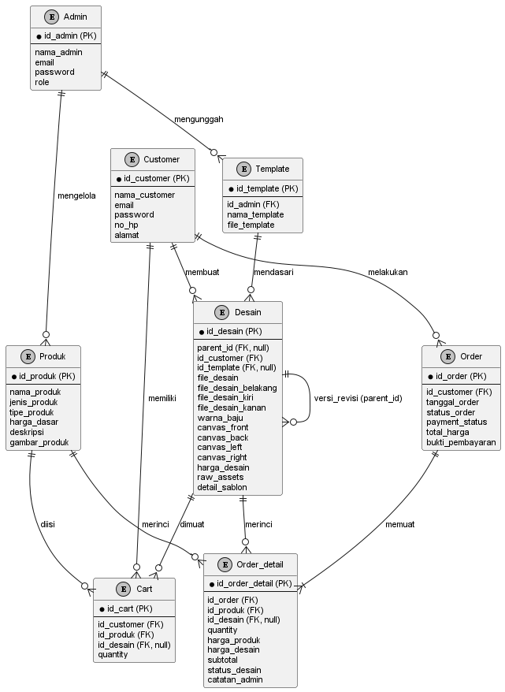
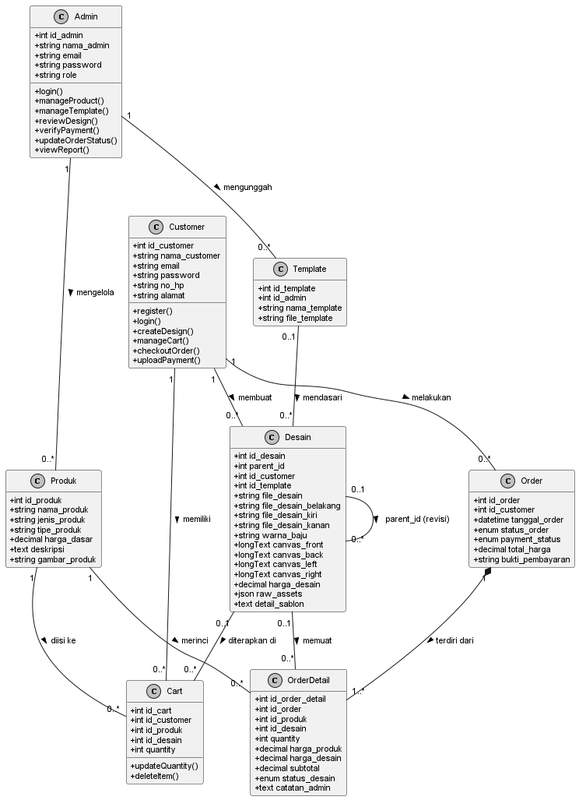

Diagram di bawah telah disinkronkan dengan skema database aktual (penambahan payment_status, role, parent_id, canvas_*, tipe_produk, dan penghapusan kolom yang tidak digunakan).
Gunakan shortcut Win + Shift + S untuk menyalin gambar diagram ke dokumen skripsi Word Anda.

Gambar 3.5 Logical Record Structure (LRS) menggambarkan struktur relasional data yang menghubungkan seluruh tabel utama dalam sistem informasi sablon baju DAILY.CO. Hubungan antara tabel Customer dengan Order, Cart, dan Desain menerapkan relasi satu-ke-banyak (one-to-many). Pada tabel Desain terdapat atribut khusus parent_id yang berelasi kembali ke tabel Desain itu sendiri (recursive relationship) untuk mendukung riwayat versi desain hasil revisi. Selain itu, tabel Order kini dilengkapi kolom payment_status yang terpisah dari status_order guna menjamin akurasi pelacakan status pembayaran transaksi.

Gambar 3.29 Class Diagram menggambarkan struktur statis sistem berorientasi objek yang memetakan kelas-kelas utama (Customer, Admin, Produk, Template, Desain, Cart, Order, dan OrderDetail) beserta atribut dan metode (operasi) yang dimiliki. Diagram ini memodelkan relasi asosiasi, agregasi, dan dependensi antar entitas model dalam arsitektur MVC Laravel, sehingga memudahkan pemetaan logika backend ke dalam basis data relasional.